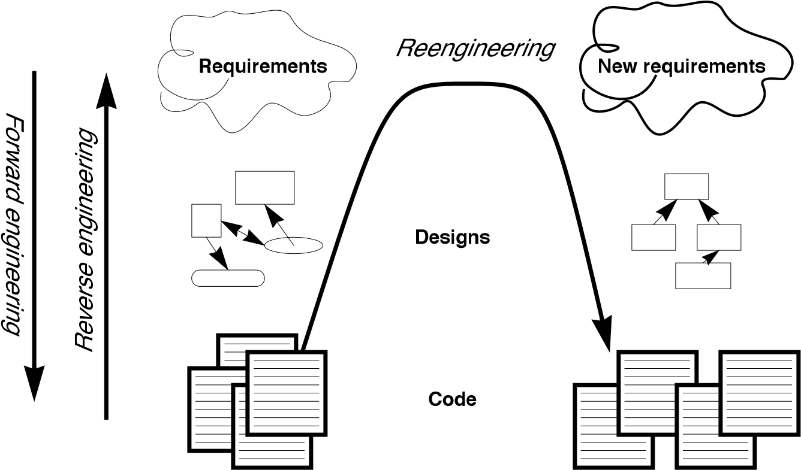
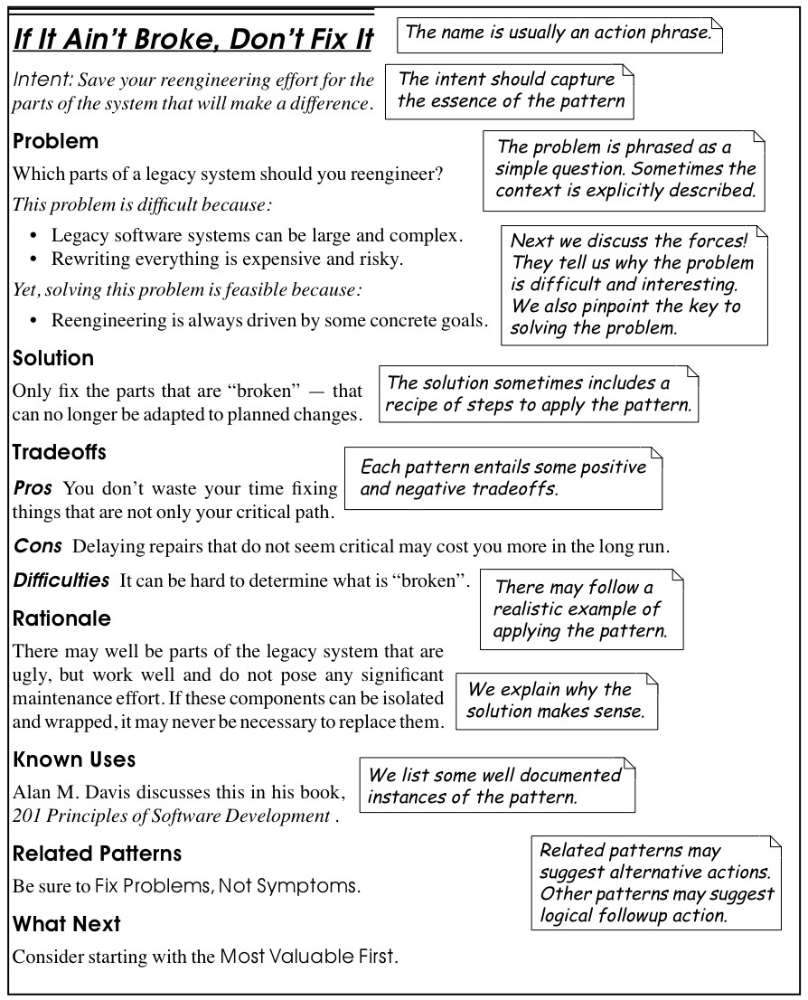
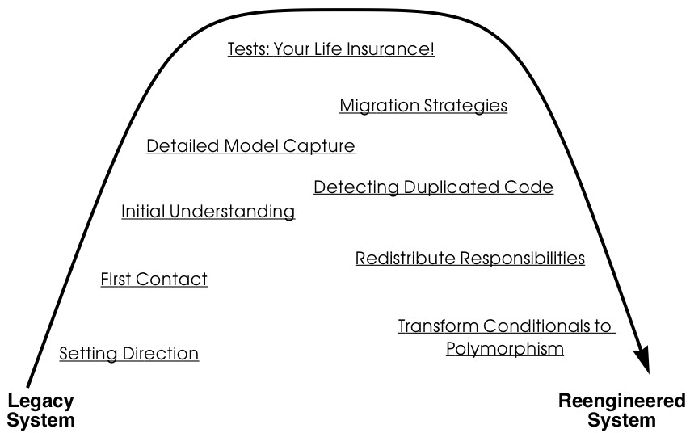

1. Reengineering Patterns
1.1 Why do we Reengineer?
A legacy is something valuable that you have inherited. Similarly, legacy software is valuable software that you have inherited. The fact you have inherited it may mean that it is somewhat old-fashioned. It may have been developed using an outdated programming language, or an obsolete development method. Most likely it has changed hands several times, and shows signs of many modifications and adaptations.
Perhaps your legacy software is not even that old. With rapid development tools and rapid turnover in personnel, software systems can turn into legacies more quickly than you might imagine. The fact that the software is valuable, however, means that you do not just want to throw it away.
A piece of legacy software is critical to your business, and that is precisely the source of all the problems: in order for you to be successful at your business, you must constantly be prepared to adapt to a changing business environment. The software that you use to keep your business running must therefore also be adaptable. Fortunately a lot of software can be upgraded, or simply thrown away and replaced when it no longer serves its purpose. But a legacy system can neither be replaced nor upgraded except at a high cost. The goal of reengineering is to reduce the complexity of a legacy system sufficiently that it can continue to be used and adapted at an acceptable cost.
The specific reasons that you might want to reengineer a software system can vary significantly. For example:
-
You might want to unbundle a monolithic system so that the individual parts can be more easily marketed separately or combined in different ways.
-
You might want to improve performance. (Experience shows that the right sequence is “first do it, then do it right, then do it fast”, so you might want to reengineer to clean up the code before thinking about performance.)
-
You might want to port the system to a new platform. Before you do that, you may need to rework the architecture to clearly separate the platform-dependent code.
-
You might want to extract the design as a first step to a new implementation.
-
You might want to exploit new technology, such as emerging standards or libraries, as a step towards cutting maintenance costs.
-
You might want to reduce human dependencies by documenting knowledge about the system and making it easier to maintain.
Though there may be many different reasons for reengineering a system, as we shall see, however, the actual technical problems with legacy software are often very similar. It is this fact that allows us to use some very general techniques to do at least part of the job of reengineering.
Recognizing the need to reengineer
How do you know when you have a legacy problem?
Common wisdom says, “If it ain’t broke, don’t fix it.” This attitude is often taken as an excuse not to touch any piece of software that is performing an important function and seems to be doing it well. The problem with this approach is that it fails to recognize that there are many ways in which something may be “broken”. From a functional point of view, something is broken only if it no longer delivers the function it is designed to perform. From a maintenance point of view, however, a piece of software is broken _if it can no longer be maintained. So how can you tell that your software is going to break very soon? Fortunately there are many warning signs that tell you that you are headed towards trouble. The symptoms listed below usually do not occur in isolation but several at a time.
Obsolete or no documentation. Obsolete documentation is a clear sign of a legacy system that has undergone many changes. Absence of documentation is a warning sign that problems are on the horizon, as soon as the original developers leave the project.
Missing tests. Even more important than up-to-date documentation is the presence of thorough unit tests for all system components, and system tests that cover all significant use cases and scenarios. The absence of such tests is a sign that the system will not be able to evolve without high risk or cost.
Original developers or users have left. Unless you have a clean, well-documented system with good test coverage, it will rapidly deteriorate into an even less clean, more poorly documented system.
Inside knowledge about system has disappeared. This is a bad sign. The documentation is out of sync with the existing code base. Nobody really knows how it works.
Limited understanding of the entire system. Not only does nobody understand the fine print, but hardly anyone has a good overview of the whole system.
Too long to turn things over to production. Somewhere along the line the process is not working. Perhaps it takes too long to approve changes. Perhaps automatic regression tests are missing. Or perhaps it is difficult to deploy changes. Unless you understand and deal with the difficulties it will only get worse.
Too much time to make simple changes. This is a clear sign that Lehman and Belady’s Law of Increasing Complexity has kicked in: the system is now so complex that even simple changes are hard to implement. If it takes too long to make simple changes to your system, it will certainly be out of the question to make complex changes. If there is a backlog of simple changes waiting to get done, then you will never get to the difficult problems.
Need for constant bug fixes. Bugs never seem to go away. Every time you fix a bug, a new one pops up next to it. This tells you that parts of your application have become so complex, that you can no longer accurately assess the impact of small changes. Furthermore, the architecture of the application no longer matches the needs, so even small changes will have unexpected consequences.
Maintenance Dependencies. When you fix a bug in one place, another bug pops up somewhere else. This is often a sign that the architecture has deteriorated to the point where logically separate components of the system are no longer independent.
Big build times. Long recompilation times slow down your ability to make changes. Long build times may also be telling you that the organization of your system is too complex for your compiler tools to do their job efficiently.
Difficulties separating products. If there are many clients for your product, and you have difficulty tailoring releases for each customer, then your architecture is no longer right for the job.
Duplicated code. Duplicated code arises naturally as a system evolves, as shortcut to implementing nearly identical code, or merging different versions of a software systems. If the duplicated code is not eliminated by refactoring the common parts into suitable abstractions, maintenance quickly becomes a nightmare as the same code has to be fixed in many places.
Code Smells. Duplicated code is an example of code that “smells bad” and should be changed. Long methods, big classes, long parameter lists, switch statements and data classes are few more examples that have been documented by Kent Beck and others [FBB+99]. Code smells are often a sign that a system has been repeatedly expanded and adapted without having been reengineered.
What’s special about Objects?
Although many of the techniques discussed in this book will apply to any software system, we have chosen to focus on object-oriented legacy systems. There are many reasons for this choice, but mainly we feel that this is a critical point in time at which many early adopters of object-oriented technology are discovering that the benefits they expected to achieve by switching to objects have been very difficult to realize.
There are now significant legacy systems even in Java. It is not age that turns a piece of software into a legacy system, but the rate at which it have been developed and adapted without having been reengineered.
The wrong conclusion to draw from these experiences is that “objects are bad, and we need something else”. Already we are seeing a rush towards many new trends that are expected to save the day: patterns, components, UML, XMI, and so on. Any one of these developments may be a Good Thing, but in a sense they are all missing the point.
One of the conclusions you should draw from this book is that, well, objects are pretty good, but you must take good care of them. To understand this point, consider why legacy problems arise at all with object-oriented systems, if they are supposed to be so good for flexibility, maintainability and reuse.
First of all, anyone who has had to work with a non-trivial, existing object-oriented code base will have noticed: it is hard to find the objects. In a very real sense, the architecture of an object-oriented application is usually hidden. What you see is a bunch of classes and an inheritance hierarchy. But that doesn’t tell you which objects exist at run-time and how they collaborate to provide the desired behavior. Understanding an object-oriented system is a process of reverse engineering, and the techniques described in this book help to tackle this problem. Furthermore, by reengineering the code, you can arrive at a system whose architecture is more transparent, and easier to understand.
Second, anyone who has tried to extend an existing object-oriented application will have realized: reuse does not come for free. It is actually very hard to reuse any piece of code unless a fair bit of effort was put into designing it so that it could be reused. Furthermore, it is essential that investment in reuse requires management commitment to put the right organizational infrastructure in place, and should only be undertaken with clear, measurable goals in mind [GR95].
We are still not very good at managing object-oriented software projects in such a way that reuse is properly taken into account. Typically reuse comes too late. We use object-oriented modelling techniques to develop very rich and complex object models, and hope that when we implement the software we will be able to reuse something. But by then there is little chance that these rich models will map to any kind of standard library of components except with great effort. Several of the reengineering techniques we present address how to uncover these components after the fact.
The key insight, however, is that the “right” design and organization of your objects is not something that is or can be evident from the initial requirements alone, but rather as a consequence of understanding how these requirements evolve. The fact that the world is constantly changing should not be seen purely as a problem, but as the key to the solution.
Any successful software system will suffer from the symptoms of legacy systems. Object-oriented legacy systems are just successful objectoriented systems whose architecture and design no longer responds to changing requirements. A culture of continuous reengineering is a prerequisite for achieving flexible and maintainable object-oriented systems.
1.2 The Reengineering Lifecycle
Reengineering and reverse engineering are often mentioned in the same context, and the terms are sometimes confused, so it is worthwhile to be clear about what we mean by them. Chikofsky and Cross [CI92] define the two terms as follows:
“Reverse Engineering is the process of analyzing a subject system to identify the system’s components and their interrelationships and create representations of the system in another form or at a higher level of abstraction.”
That is to say, reverse engineering is essentially concerned with trying to understand a system and how it ticks.
“Reengineering … is the examination and alteration of a subject system to reconstitute it in a new form and the subsequent implementation of the new form.”
Reengineering, on the other hand, is concerned with restructuring a system, generally to fix some real or perceived problems, but more specifically in preparation for further development and extension.
The introduction of term “reverse engineering” was clearly an invitation to define “forward engineering”, so we have the following as well:
“Forward Engineering is the traditional process of moving from high-level abstractions and logical, implementation-independent designs to the physical implementation of a system.”
How exactly this process of forward engineering can or should work is of course a matter of great debate, though most people accept that the process is iterative, and conforms to Barry Boehm’s so-called spiral model of software development [Boe88]. In this model, successive versions of a software system are developed by repeatedly collecting requirements, assessing risks, engineering the new version, and evaluating the results. This general framework can accommodate many different kinds of more specific process models that are used in practice.
If forward engineering is about moving from high-level views of requirements and models towards concrete realizations, then reverse engineering is about going backwards from some concrete realization to more abstract models, and reengineering is about transforming concrete implementations to other concrete implementations.
Figure 1.1 illustrates this idea. Forward engineering can be understood as being a process that moves from high-level and abstract models and artifacts to increasing concrete ones. Reverse engineering reconstructs higher-level models and artifacts from code. Reengineering is a process that transforms one low-level representation to another, while recreating the higher-level artifacts along the way.

Figure 1.1: Forward, reverse and reengineering
The key point to observe is that reengineering is not simply a matter of transforming source code, but of transforming a system at all its levels. For this reason it makes sense to talk about reverse engineering and reengineering in the same breath. In a typical legacy system, you will find that not only the source code, but all the documentation and specifications are out of sync. Reverse engineering is therefore a prerequisite to reengineering since you cannot transform what you do not understand.
Reverse engineering
You carry out reverse engineering whenever you are trying to understand how something really works. Normally you only need to reverse engineer a piece of software if you want to fix, extend or replace it. (Sometimes you need to reverse engineer software just in order to understand how to use it. This may also be a sign that some reengineering is called for.) As a consequence, reverse engineering efforts typically focus on redocumenting software and identifying potential problems, in preparation for reengineering.
You can make use of a lot of different sources of information while reverse engineering. For example, you can:
-
read the existing documentation
-
read the source code
-
run the software
-
interview users and developers
-
code and execute test cases
-
generate and analyze traces
-
use various tools to generate high-level views of the source code and the traces
-
analyze the version history
As you carry out these activities, you will be building progressively refined models of the software, keeping track of various questions and answers, and cleaning up the technical documentation. You will also be keeping an eye out for problems to fix.
Reengineering
Although the reasons for reengineering a system may vary, the actual technical problems are typically very similar. There is usually a mix of coarsegrained, architectural problems, and fine-grained, design problems. Typical coarse-grained problems include:
-
Insufficient documentation: documentation either does not exist, or is inconsistent with reality.
-
Improper layering: missing or improper layering hampers portability and adaptability.
-
Lack of modularity: strong coupling between modules hampers evolution.
-
Duplicated code: “copy, paste and edit” is quick and easy, but leads to maintenance nightmares.
-
Duplicated functionality: similar functionality is reimplemented by separate teams, leading to code bloat.
The most common fine-grain problems occurring in object-oriented software include:
-
Misuse of inheritance: for composition, code reuse rather than polymorphism
-
Missing inheritance: duplicated code, and case statements to select behavior
-
Misplaced operations: unexploited cohesion — operations outside instead of inside classes
-
Violation of encapsulation: explicit type-casting, C++ “friends” .
-
Class abuse: lack of cohesion — classes as namespaces
Finally, you will be preparing the code base for the reengineering activity by developing exhaustive test cases for all the parts of the system that you plan to change or replace.
Reengineering similarly entails a number of interrelated activities. Of course, one of the most important is to evaluate which parts of the system should be repaired and which should be replaced.
The actual code transformations that are performed fall into a number of categories. According to Chikofsky and Cross:
“Restructuring is the transformation from one representation form to another at the same relative abstraction level, while preserving the system’s external behavior.”
Restructuring generally refers to source code translation (such as the automatic conversion from unstructured “spaghetti” code to structured, or “goto-less”, code), but it may also entail transformations at the design level.
Refactoring is restructuring within an object-oriented context. Martin Fowler defines it this way:
“Refactoring is the process of changing a software system in such a way that it does not alter the external behavior of the code yet improves its internal structure.”
— Martin Fowler, [FBB+99]
It may be hard to tell the difference between software “reengineering” and software “maintenance”. IEEE has made several attempts to define software maintenance, including this one:
“the modification of a software product after delivery to correct faults, to improve performance or other attributes, or to adapt
the product to a changed environment” Most people would probably consider that “maintenance” is routine whereas “reengineering” is a drastic, major effort to recast a system, as suggested by figure 1.
Others, however, might argue that reengineering is just a way of life.
You develop a little, reengineer a little, develop a little more, and so on [Bec00]. In fact, there is good evidence to support the notion that a culture of continuous reengineering is necessary to obtain healthy, maintainable software systems.
Continuous reengineering, however, is not yet common practice, and for this reason we present the patterns in this book in the context of a major reengineering effort. Nevertheless, the reader should keep in mind that most of the techniques we present will apply just as well when you reengineer in small iterations.
1.3 Reengineering Patterns
Patterns as a literary form were introduced by the architect Christopher Alexander in his landmark 1977 book, A Pattern Language. In this book, Alexander and his colleagues presented a systematic method for architecting a range of different kinds of physical structures, from rooms to buildings and towns. Each issue was presented as a recurring pattern, a general solution which resolves a number of forces, but must be applied in a unique way to each problem according to the specific circumstances. The actual solution presented in each pattern was not necessarily so interesting, but rather the discussion of the forces and tradeoffs consisted of the real substance they communicated.
Patterns were first adopted by the software community as a way of documenting recurring solutions to design problems. As with Alexander’s patterns, each design pattern entailed a number of forces to be resolved, and a number of tradeoffs to consider when applying the pattern. Patterns turn out to be a compact way to communicate best practice: not just the actual techniques used by experts, but the motivation and rationale behind them. Patterns have since been applied to many aspects of software development other than design, and particularly to the process of designing and developing software.
The process of reengineering is, like any other process, one in which many standard techniques have emerged, each of which resolves various forces and may entail many tradeoffs. Patterns as a way of communicating best practice are particularly well-suited to presenting and discussing these techniques.
Reengineering patterns codify and record knowledge about modifying legacy software: they help in diagnosing problems and identifying weaknesses which may hinder further development of the system, and they aid in finding solutions which are more appropriate to the new requirements. We see reengineering patterns as stable units of expertise which can be consulted in any reengineering effort: they describe a process without proposing a complete methodology, and they suggest appropriate tools without “selling” a specific one.
Many of the reverse engineering and reengineering patterns have some superficial resemblance to design patterns, in the sense that they have something to do with the design of software. But there is an importance difference in that design patterns have to do with choosing a particular solution to a design problem, whereas reengineering patterns have to do with discovering an existing design, determining what problems it has, and repairing these problems. As a consequence, reengineering patterns have more to do with the process of discovery and transformation than purely with a given design structure. For this reason the names of most of the patterns in this book are process-oriented, like Always Have a Running Version [p. 180], rather than being structure-oriented, like Adapter [p. 293] or Facade [p. 293].
Whereas a design pattern presents a solution for a recurring design problem, a reengineering pattern presents a solution for a recurring reengineering problem. The artifacts produced by reengineering patterns are not necessarily designs. They may be as concrete as refactored code, or in the case of reverse engineering patterns, they may be abstract as insights into how the system functions.
The mark of a good reengineering pattern is (a) the clarity with which it exposes the advantages, the cost and the consequences of the target artifacts with respect to the existing system state, and not how elegant the result is, (b) the description of the reengineering process: how to get from one state of the system to another.
Reengineering patterns entail more than code refactorings. A reengineering pattern may describe a process which starts with the detection of the symptoms and ends with the refactoring of the code to arrive at the new solution. Refactoring is only the last stage of this process, and addresses the technical issue of automatically or semi-automatically modifying the code to implement the new solution. Reengineering patterns also include other elements which are not part of refactorings: they emphasize the context of the symptoms, by taking into account the constraints that reengineers are facing, and include a discussion of the impact of the changes that the refactored solution may introduce.
1.4 The Form of a Reengineering Pattern
In Figure 1.2 we see an example of a simple pattern that illustrates the format we use in this book. The actual format used may vary slightly from pattern to pattern, since they deal with different kinds of issues, but generally we will see the same kind of headings.
The name of a pattern, if well-chosen, should make it easy to remember the pattern and to discuss it with colleagues. (”I think we should Refactor to Understand or we will never figure out what’s going on here.”) The intent should communicate very compactly the essence of a pattern, and tell you whether it applies to your current situation.
Many of the reengineering patterns are concerned with code transformation, in which case a diagram may be used to illustrate the kind of transformation that takes place. Typically such patterns will additionally include steps to detect the problem to be resolved, as well as code fragments illustrating the situation before and after the transformation.
1.5 A Map of Reengineering Patterns
The patterns in this book are organized according to the reengineering lifecycle presented earlier. In figure 3 we can see the chapters in this book represented as clusters of patterns along the lifecycle. The diagram suggests that the patterns may be applied in sequence. Though this may well be the case, in practice you are more likely to iterate between reverse engineering and reengineering tasks. The diagram is simplistic in the same sense that the “waterfall” lifeycle is simplistic: it may be a useful way to keep track of the different software engineering activities and their relationships, even though we know that they are not carried out sequentially but iteratively.
Each cluster of patterns is presented as a simple “pattern language” — a set of related patterns that may be combined to address a common set of problems. As such, each chapter will typically start with a overview and a map of the patterns in that chapter, suggesting how they may be related.
Setting Direction contains several patterns to help you determine where to focus your reengineering efforts, and make sure you stay on track. First Contact consists of a set of patterns that may be useful when you encounter a legacy system for the first time. Initial Understanding helps you to develop a first simple model of a legacy system, mainly in the form of class diagrams. Detailed Model Capture helps you to develop a more detailed model of a particular component of the system.

Figure 1.2: The format of a typical reengineering pattern 
Figure 1.3: A map of reengineering pattern clusters
Tests: Your Life Insurance! focusses on the use of testing not only to help you understand a legacy system, but also to prepare it for a reengineering effort. Migration Strategies help you keep a system running while it is being reengineered, and increase the chances that the new system will be accepted by its users. Detecting Duplicated Code can help you identify locations where code may have been copied and pasted, or merged from different versions of the software. Redistribute Responsibilities helps you discover and reengineer classes with too many responsibilities. Transform Conditionals to Polymorphism will help you to redistribute responsibilities when an object-oriented design has been compromised over time.